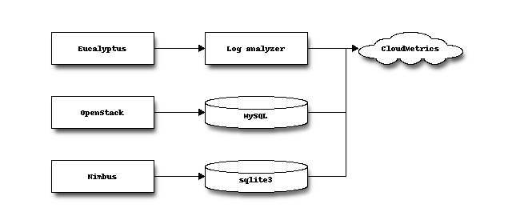

We assume you have a valid python version (2.7.2 or higher) and all the needed libraries on the system where you run the code.
sudo apt-get install libmysqlclient-dev sudo apt-get install python-dev
The FG Cloud Metric is available from PyPI and can be easily installed with pip. We recommend that you use virtualenv to manage your local python installation. We recommend to use pip:
pip install futuregrid-cloud-metric
The development version is available from github at and you can clone it and install with:
git clone https://github.com/futuregrid/cloud-metrics
cd cloud-metrics
python setup.py install
To obtain access information, DB access information for FG CloudMetrics (only accessible by collaborators)
For cloud-metric to work, you naturally need some data to ingest into it. Cloudmetric can at this time use mostly IaaS log files as input, but in future we will add additional information sources from other information providers. Currently we support Eucalyptus, OpenStack, as well as Nimbus.

FG CloudMetrics is collecting accounting information from log files in a Eucalyptus management server. Two methods have been used: real-time and daily update.
First, we need to specify which files that FG CloudMetrics is looking for.
cc.log
Second, we need to understand what information it does have, for example:
[Sun Jan 1 04:11:31 2012][032300][EUCADEBUG ] print_ccInstance(): refresh_instances(): instanceId=i-4791080F reservationId=r-3CC30810 emiId=emi-CD38100F kernelId=eki-78EF12D0 ramdiskId=eri-5BB61250 emiURL=http://149.165.146.130:8773/services/Walrus/jklingin/centos5-6.x86_64.manifest.xml kernelURL=http://149.165.146.130:8773/services/Walrus/xenkernel/vmlinuz-2.6.27.21-0.1-xen.manifest.xml ramdiskURL=http://149.165.146.130:8773/services/Walrus/xeninitrd/initrd-2.6.27.21-0.1-xen.manifest.xml state=Extant ts=1325364349 ownerId=abcde keyName=ssh-rsa sddd abc@eucalyptus ccnet={privateIp=10.128.3.0 publicIp=149.165.159.140 privateMac=D0:0D:47:91:08:0F vlan=14 networkIndex=5} ccvm={cores=1 mem=512 disk=5} ncHostIdx=6 serviceTag=http://i0:8775/axis2/services/EucalyptusNC userData= launchIndex=0 volumesSize=0 volumes={} groupNames={default }
Third, we parse and store the information in two ways: real-time, and daily update
Real-time collector with ‘tail -f’ like logwatcher.py
python logwatcher.py | python fg-logparser -i - in management server.
This way allows us to collect accounting information instantly from logs.
- logwatcher.py script observes cc.log files like a ‘tail -f’ command, but it does not lose file control if the cc.log file is rotated to cc.log.1 or .*
- fg-logparser (FGParser.py) parses log messages and stores metric values into FG Cloud Metrics db.
Daily update
cron runs fg-logparser daily to adjust possible missing messages from real-time collector. 0 4 * * * fg-logparser -s `date +\%Y\%m\%d -d "1 day ago"` -e `date +\%Y\%m\%d -d "1 day ago"` -i $backup_directory -n $nodename -z (zipped) -tz $timezone (e.g. PST)
This is based on backups of log files
fg-euca-gather-log-files (FGCollectFiles.py) makes backups by hourly checking log directory with cron
2 * * * * fg-euca-gather-log-files
HERE IS AN OLD INCOMPLETE TEXT I FOUND, THERE IS NOW SOME REDUNDANT INFORMATION HERE WITH OTHER PORTIONS:
Eucalyptus provides a substantial set of log information. The information is stored in the eucalyptus log directory. Typically it is configured by the system administrator with log rotation. This naturally would mean that the information is lost after a time period specified by the log rotation configuration. There are two mechanisms of avoiding this. The first method is to change the eucalyptus configuration files in order to disable log rotation. However this has the disadvantage that the directories may fill up and eucalyptus runs out of space. How to disable Eucalyptus log rotation is discussed in the manaula at ... . However we decided to go another route, buy copying the Eucalyptus log files after a particular period of time and place them onto our analysis server and also a backup server. To set this mechanism up, a Eucalyptus system administrator simply can install our tools in a predefined directory and call a command that copies the log files. Ideally This is integrated into a cron script so that the process is done on regular basis.
To switch on eucalyptus in debug mode ‘EUCADEBUG’ you will have to do the following
change LOGLEVEL to DEBUG in eucalyptus.conf
LOGLEVEL="DEBUG"
Reference: eucalyptus.conf man page
This section explains how to make a log backup of eucalyptus using our tools. The Eucalyptus Cluster Controller (CC) generates a log file named cc.log. In many production environments this log file is stored in rotating fashion so that you have a number attached with the log file, while keeping the number of log files to a small set as not to overwhelm the server on which EUcalyptus runs with data. Naturally for a metric analysis tool such a deployment is not ideal, as we will lose data soon.
To collect all data, we have written a small tool that looks into the log files renames them with time stamps and copies them over onto another machine. This process is best set up via a cronscript, but could also be performed by hand. As we rename that files based on data entries from the file, we can invoke the command as many times as we want. If the data is already copied, the file is not transferred.
Note that in our example the backup directory could be a remote location.
Log into the management node of eucalyptus that provides access to the log files
Create crontab:
#Hourly
0 * * * * fg-euca-gather-log-files -i <directory of log files> -o <directory of backup>
A more detailed description is provided as part of the fg-euca-gather-log-files manual page.
Once we collected log files into the backup directory via the fg-euca-gather-log-files` command, we need to parse them into a convenient database that is easier for us to query. The database configuration is stored in a file called ~/.futuregrid/futuregrid.cfg and includes hostname, id, password, and port number, thus you need to store it securely. The file includes the following:
[CloudMetricsDB]
host=<yourhostname>
port=<portnumber>
user=<username>
passwd=<password>
db=<dbname>
To invoke the parsing all you have to do is specify the backup directory. The -i flag indicates we insert new data into existing data:
fg-parser -i <directory of the backup>
Please refer: DB access information for FG CloudMetrics (only accessible by collaborators) to obtain db access information.
In ~/.futuregrid/futuregrid.cfg please add:
[NovaDB]
host=<your openstack database host - mysql>
port=<port number>
user=<username>
passwd=<password>
novadb=<nova database name which includes instances table>
keystonedb=<nova keystone database name which includes user table>
Nimbus has sqlite3 database to keep the record on cloud usage. FG Cloud Metrics provides a tool to convert service-oriented db into unified FG Cloud Metrics database. fg-metric-converter -s YYYMMDD -e YYYMMDD -p $cloud_service (e.g.nimbus) -db $db_type (e.g. sqlite3, mysql) -i $file_path (sqlite3 is used a single file as a database) -n $nodename (e.g. hotel, india)
For example, FutureGrid collects nimbus data daily and uses cron to convert and store as following:
0 6 * * * fg-metric-converter -s `date +\%Y\%m\%d -d "1 day ago"` -e `date +\%Y\%m\%d -d "1 day ago"` -p nimbus -db sqlite3 -i /nimbus/hotel -n hotel
0 6 * * * fg-metric-converter -s `date +\%Y\%m\%d -d "1 day ago"` -e `date +\%Y\%m\%d -d "1 day ago"` -p nimbus -db sqlite3 -i /nimbus/sierra -n sierra
0 6 * * * fg-metric-converter -s `date +\%Y\%m\%d -d "1 day ago"` -e `date +\%Y\%m\%d -d "1 day ago"` -p nimbus -db sqlite3 -i /nimbus/foxtrot -n foxtrot
0 6 * * * fg-metric-converter -s `date +\%Y\%m\%d -d "1 day ago"` -e `date +\%Y\%m\%d -d "1 day ago"` -p nimbus -db sqlite3 -i /nimbus/alamo -n alamo
Now you can use the convenient fg-metric shell to create results. The reason why we have developed a shell is to allow us to issue consecutive commands as is typically needed in a production environment. Here we show an example on how to analyze and create reports for the year 2012:
$ fg-metric-beta
Welcome to FutureGrid Cloud Metrics!
fg-metric] set date 2012-01-01T00:00:00 2012-12-31T00:00:00
fg-metric] set metric runtime
fg-metric] analyze
fg-metric] chart
As our metric system can use scripts either via pipe or a file, you can store more complex queries into a file and start the metric framework with them:
cat examples/example2.txt | fg-metric
or with file flag:
fg-metric -f examples/example2.txt
| Command | Description |
|---|---|
| fg-cleanup-db | erases the content of the database |
| fg-parser | parses eucalyptus log entries and includes them into the database |
| fg-euca-gather-log-files | gathers all eucalyptus log files into a single directory from the eucalyptus log file directory. This script can be called from cron repeatedly in order to avoid that log data is lost by using log file rotation in eucalyptus. |
| fg-metric | a shell to interact with the metric database. |
Warning
TODO Hyungro, fix all ?? and make suer contents in this section is ok
We provide a simple producton service that uses sphinx to render the information associated with a cloud deployment. We have done this in order to provide a very simple framework that you can expand while not needing to invest any time in learning a web framework. To do this you must use the development version of the cloud metric framework as discussed in section ??.
Next please execute:
cd cloud-metric/doc
make force
If you met all the prerequisits, you will find the index file in:
cloud-metric*/doc/build/html/index.html
Warning
TODO Hyungro, I do not think that thsi at all works, you are not describing what you do with results
live example of the data is available at
Warning
TODO Hyungro
This is a part of separated task which is at: PDF Report generator
This will be merged into CloudMetrics with a better format soon.